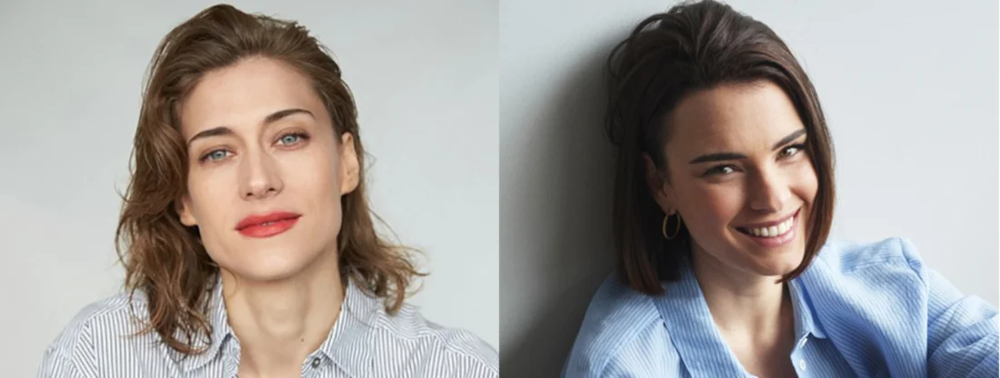

Actrices

Marta Belmonte
Marta Belmonte Ibáñez nació en Barcelona el 27 de septiembre de 1982.
Formó su talento principalmente en el teatro, y en producciones de series como "Servir y Proteger", "Isabel", "Isla Brava", "Los Favoritos de Midas" y más. También fue autora y directora de la obra de teatro "El orden de las cosas".
A finales de 2023 se confirmó su participación protagónica en "Sueños de libertad", serie diaria de Antena 3 para interpretar a Marta de la Reina, una mujer de época, que le da voz a las luchas de una generación. Su relación con Fina, se convirtió rápidamente en la historia romántica con más llegada internacional de la serie.
Más información sobre la trayectoria de la actriz, aquí.
Alba Brunet
Alba Brunet nació en Palma de Mallorca el 18 de octubre de 1993.
Consolidó su formación actoral en producciones como "Acacias 38", en series como "Paraíso" o "Mòpies", y en cortos como "Andy y las demás".
A finales de 2023 se anunció su papel co-protagónico en "Sueños de libertad", la serie diaria de Antena 3, para dar vida a Serafina Valero. Su interpretación de una mujer lesbiana valiente y auténtica en los años 50 ha sido clave en el éxito internacional de la serie, por su relación romántica con Marta de la Reina, dando así vida a Mafin.
Más información sobre la trayectoria de la actriz, aquí.